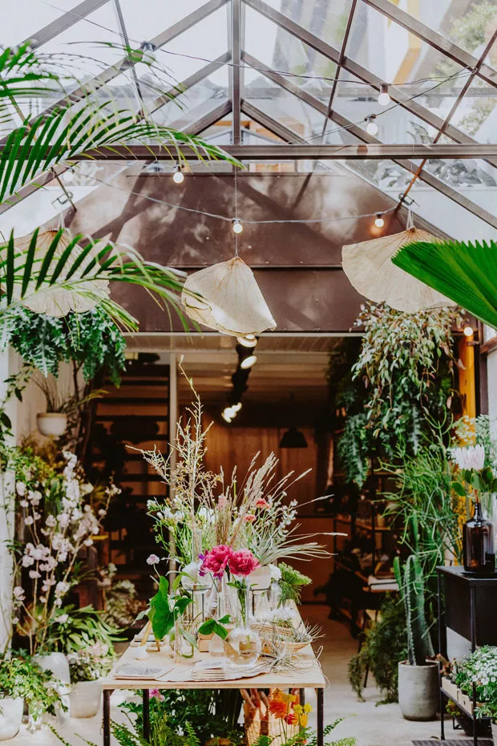

Pink Princess | Paisagismo
Te ver florescer, é o nosso dever
A Pink Princess
A Pink Princess é um verdadeiro paraíso para os amantes de jardinagem e design, tanto de interiores como também exteriores. Localizada em um espaço encantador e acolhedor, nos destacamos não apenas pela variedade de plantas exuberantes que oferecemos, mas também pelo nosso belíssimo ambiente que convida os clientes a explorar e se inspirar.
Ao entrar no nosso espaço, você será recebido(a) por uma profusão de cores e aromas naturais. As plantas são cuidadosamente organizadas em seções temáticas, facilitando a escolha de acordo com as preferências pessoais e as necessidades específicas de cada projeto de paisagismo. Desde flores vibrantes à arbustos ornamentais, cada espécie é selecionada com base na sua beleza e adaptabilidade ao clima local.
O design da loja é elegante e contemporâneo, com tons de rosa suaves e detalhes que evocam a natureza, criando um ambiente relaxante e inspirador. Há também áreas dedicadas a acessórios de jardinagem, como vasos decorativos, ferramentas especializadas e substratos nutritivos, todos selecionados para complementar as plantas vendidas na loja.
Nossos clientes não são apenas entusiastas individuais, mas também paisagistas profissionais em busca de variedade e qualidade para seus projetos. A equipe da loja é composta por especialistas em jardinagem, prontos para oferecer conselhos personalizados e orientação técnica sobre cuidados com as plantas e design de jardins.
Além de sermos uma loja de varejo, nós também realizamos workshops regulares sobre jardinagem e paisagismo, atraindo tanto iniciantes quanto especialistas em busca de novas técnicas e ideias. Esses eventos não apenas educam, mas também fortalecem a comunidade de entusiastas locais de jardinagem, tornando a Pink Princess um ponto de encontro para compartilhar paixões e conhecimentos.
Em resumo, a Pink Princess não é apenas uma loja de plantas, mas um destino para quem deseja transformar espaços exteriores em verdadeiros jardins dos sonhos, onde a beleza natural e a criatividade se encontram em perfeita harmonia.
As Nossas Meninas
Cuidados

Cuidar de um jardim e do paisagismo envolve alguns passos essenciais para manter as plantas saudáveis e o ambiente bonito.
Os cuidados vão da preparação do solo até a manutenção regular do seu jardim. É essencial escolher as plantas adequadas ao clima local, irrigar de forma consistente, adubar regularmente e realizar podas e limpezas periódicas.
Além disso, cuidar do jardim envolve a atenção aos detalhes que transformam o espaço em um verdadeiro refúgio. Elementos como iluminação estratégica, caminhos bem delineados e o uso criativo de elementos decorativos contribuem para a atmosfera acolhedora do ambiente. Esses cuidados não só promovem o bem-estar das plantas, mas também criam um lugar onde se pode relaxar e apreciar a beleza da natureza.
Se você está buscando materiais e inspiração para aprimorar seu jardim, convidamos você a explorar nossa variedade de produtos e ideias inovadoras. Visite nosso espaço dedicado aos amantes de jardins e paisagismo, onde você encontrará tudo o que precisa para transformar seu espaço interior e exterior em um verdadeiro paraíso verde. Venha nos visitar e deixe seu jardim ainda mais encantador!
Entre em Contato
Estamos abertos para tirar quaisquer dúvidas que você possa ter
Email: pinkprincess@ficticio.com
Telefone: +55 (99) 91534-9889
Endereço: Av. Alameda das Flores, 123, Flora, BA, Brasil